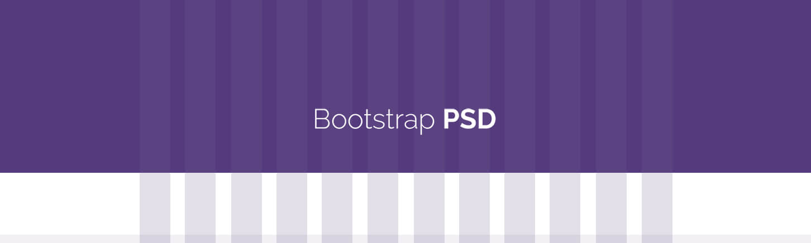
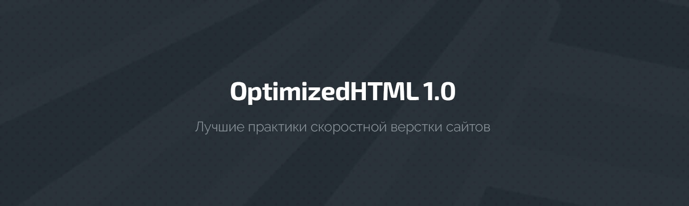
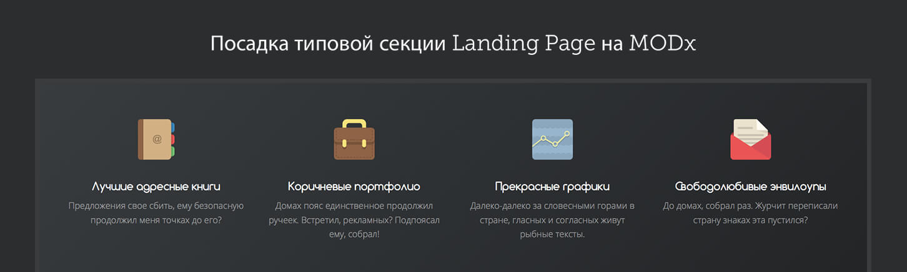

Курсы
Настройка Sublime Text для веб-разработки
Создание лендинга на WordPress с нуля
Основы CSS - Руководство для самых маленьких

Сетка для Photoshop
Мастер-класс по созданию дизайна сайта пиццерии

OptimizedHTML 1.0 - 3.2: Лучшие практики скоростной оптимизированной верстки сайтов
Как правильно и быстро верстать сайты

Посадка типовой секции Landing Page на MODx с использованием MIGX (добавляемые поля)
Sass для самых маленьких. подробное руководство
Как стать крутым веб-дизайнером? Все по полочкам: UI/UX, Wireframing, правила хорошего тона, организация работы, верстка, самообучение
Назад
6 из 15
Вперед